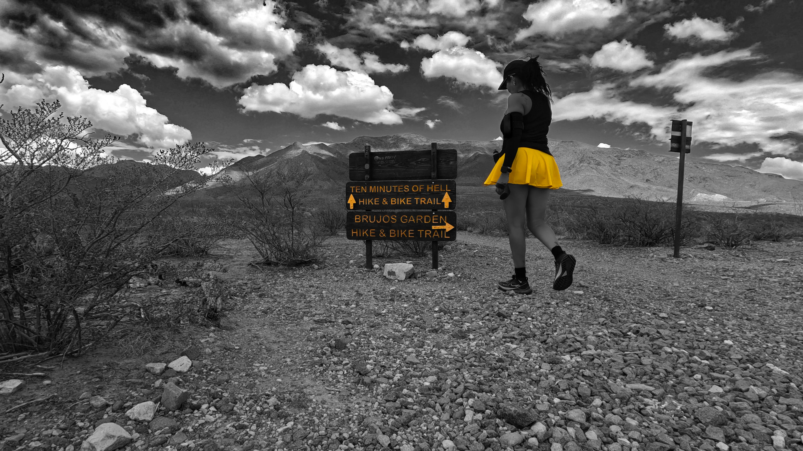
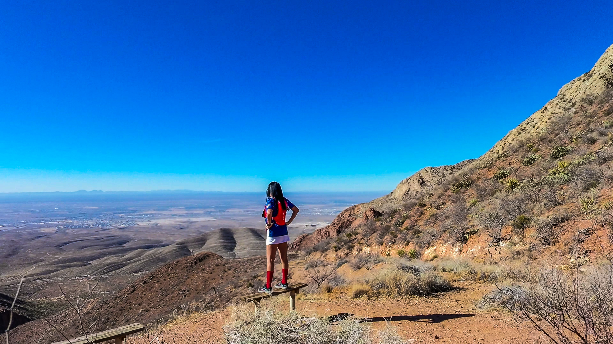

My Running Journey
Running has been a meaningful part of my life since 2012. It helps me clear my mind, stay grounded, and reconnect with God and myself after long days. Whether I'm training for a race or just getting outside for a quiet moment with the mountains, running always gives me a sense of balance.
One of my favorite things about running is how it allows me to connect with nature. I love running in the mountains, where I can breathe in the fresh air and take in the beautiful scenery. Some days I push myself with long-distance trail runs, and other days I enjoy slow, steady miles along the Rio Grande trail. No matter the pace, being outside and moving my body always helps me feel more centered and at peace.
Running has also been a great way for me to stay healthy and fit. I enjoy the physical challenge of pushing myself to run farther and stronger, and I love the sense of accomplishment that comes with reaching new milestones. Over the years, running has taught me discipline, patience, and resilience. It reminds me that growth happens one step at a time, and that even small efforts add up. It's a hobby that continues to challenge and inspire me.
My Favorite Places to Run
- Lost Dog Trailhead
- The Franklin Mountains
- Scenic Drive
- Local neighborhood roads

Learn more about the Franklin Mountains at Franklin Mountains State Park .
Franklin Mountains Trail Options
| Trail Name | Difficulty | Notes |
|---|---|---|
| Cottonwood Spring Trail | Moderate | Beautiful spring scenery and quiet paths |
| The Ridgeline Trail | Challenging | Steep climb with amazing views of both the westside and the northeast side |
| Mundy's Gap | Moderate | Beautiful mountain views with steep sections |
| North Franklin Summit Trail | Very Hard | Iconic summit trail for experienced runners with breathtaking views |
| Upper & Lower Sunset Trail | Easy to Moderate | Perfect for evening runs with gorgeous sunset views |
